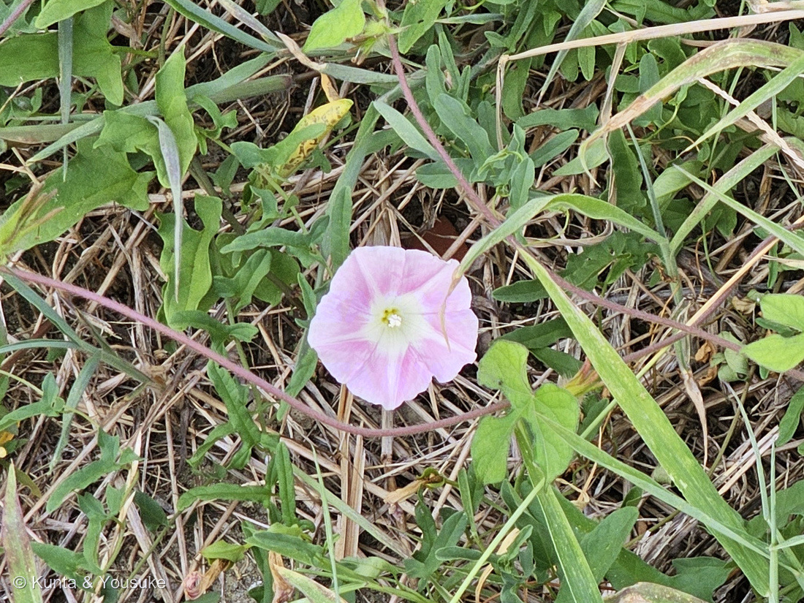
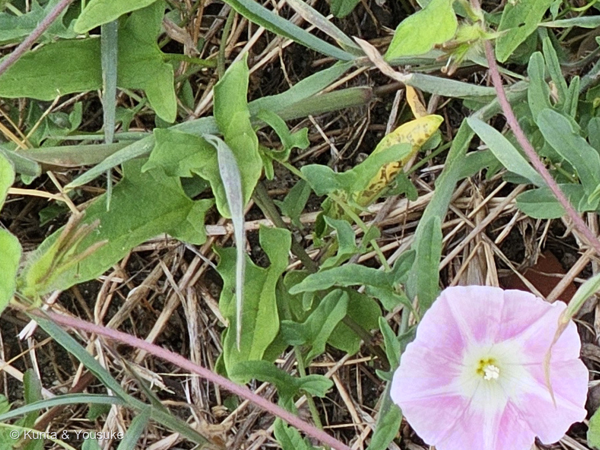

地図を読み込んでいるよ…
🔍 写真も地図も、押しているあいだ拡大して見られるよ（スマホは指を置いてすこし待ってね）。
🌍 の地図＝この子がもともと自生している場所を緑に。日本・東アジア（在来のつる草）。
⚠ 地図は国（日本と中国だけ県・省）までしか塗れないから、ほんとうの分布より広く見えていることがあるよ。地図はだいたいの場所。正確なところは、上の文を見てね。
ヒルガオ
Calystegia pubescens Lindl.
※ 同定は要確認 — ヒルガオの仲間か、ハート葉のアサガオ類（Ipomoea）か
ヒルガオ科 · Convolvulaceae
名前と学名の由来
- Calystegia（カリステギア）＝ギリシャ語の「kalyx（萼・カップ）」＋「stege／stegos（覆い・屋根）」で、「萼を覆うもの」。花のすぐ下にある2枚の大きな苞（ほう）が萼を包みかくすことにちなむ。近い仲間の Convolvulus（セイヨウヒルガオなど）との見分けどころ。
- pubescens（プベスケンス）＝ラテン語で「軟毛のある・うぶ毛のある」。茎や葉に細かい毛があることにちなむ。（※日本のヒルガオの学名は資料により Calystegia japonica などとも扱われる。）
この植物のこと
- ヒルガオ科の多年生のつる草。日当たりのよい野原・道ばた・土手などにごくふつう。地下茎でよくふえて茂り、畑では強い雑草になることもある。
- 名前のとおり、朝顔とちがって昼に咲いて夕方まで開いている（昼顔）。アサガオ（一年草・別属 Ipomoea）とは別のなかま。
- 花は淡いピンクの漏斗（じょうご）形。葉は矛（ほこ）形〜三角状で、基部が横に張り出す。つるは他のものに巻きついてのびる。
- Calystegia の特徴：花のすぐ下に2枚の大きな苞（ほう）があり、その中に萼がかくれている。
- 日本では結実しにくく、おもに地下茎でふえる。
- 見分けメモ（要確認）：この写真は葉が矢じり形（矛形）でなく、丸いハート形（心形）に見える。ヒルガオ類でも株の位置や環境で葉形はある程度ぶれるが、丸いハート葉＋じょうご形の花＋つるは、ハート形の葉をもつアサガオ類（Ipomoea＝マルバアサガオ・ホシアサガオ・マメアサガオなどの帰化アサガオ）にもよく当てはまる。
- 決め手：花のすぐ下の2枚の大きな苞（Calystegia＝あり／Ipomoea＝なし）、花の大きさ（ヒルガオは5〜6cmと大きめ）、咲く時間帯（ヒルガオ＝昼／アサガオ＝朝）。よく似たコヒルガオ（花が小さく花柄に縮れた翼、葉の基部が角ばる）とも紛らわしい。現時点では「ヒルガオの仲間」として扱いつつ、要確認とする。
⭐⭐⭐⭐⭐ 2026-09-03 ── さがしていた「矢じり形の葉」に、やっと会えた
- 2026年9月3日の朝、燻太さんが通勤路の草むらで3枚撮ってきてくれた。そのときの言葉は「青色とピンクのアサガオが、マルバルコウと同じ茂みに生えているよ」。
- ⭐青い子は、燻太さんの言うとおりアサガオのなかま（Ipomoea）だった。──でもピンクの子は、アサガオじゃなかったんだ。
- ⭐⭐⭐⭐⭐決め手は、色じゃなくて葉。写真③を見て。細長い三角形の葉の、根もとが左右にピンと張り出している——これが矛（ほこ）形だよ。⚠アサガオのなかまの葉は、ハート形か3つに裂けるかで、この形にはならない。
- ⭐⭐同じ1枚の中に、その「別のなかま」もちゃんと写っている。写真②の右下にあるのは3つに裂けた葉、画面を横切る赤紫色で毛の生えたつるもアサガオのほう。⭐同じ茂みに、2つのなかまが重なって暮らしているんだね。
- ⚠⚠ぼくが確かめられなかったことも、書いておくね。──柱頭（めしべの先）が2つに割れているかは、いちばん大きく伸ばしてもぼやけて読めなかった。花のすぐ下の2枚の苞も、草にかくれて見えなかった。⭐だからぼくは、葉の形だけで言っている。
- ⚠⚠⚠そして、いちばん大事なこと。この②③は、①（2022年10月3日）とは別の場所・別の株だよ。⚠①の「要確認」は、これでは動かない——①の葉は、やっぱり丸いハート形のままなんだ。
- ⏳のこっている宿題は「ヒルガオか、コヒルガオか」。──花柄（花のすぐ下の茎）の上のほうに、縮れた細い翼があればコヒルガオ、なければヒルガオ。花の直径も、ヒルガオは5〜6cm、コヒルガオは3〜4cmとちがう。⚠写真③では葉の根もとの張り出しが2つに割れているようにも見えて、そこだけならコヒルガオ寄り。でも1点では決めない（087 ヤマモモで覚えたことだね）。⭐草はちぎらなくていい。花の下の茎を横から1枚もらえれば決まるよ。
参考 ── 三河の植物観察「ヒルガオ」／同「コヒルガオ」（葉の形・花柄の翼・花の大きさは、この2ページを見くらべた）